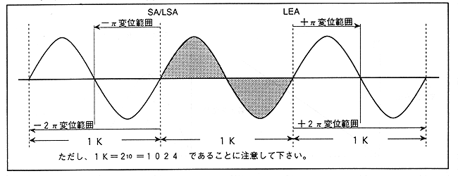
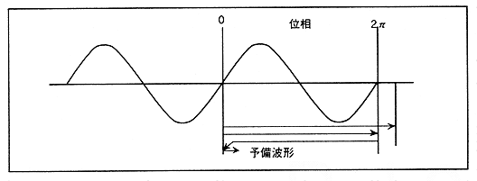

∙ When performing FM speech synthesis, leave extra data for the address displacement. Basically, if it is ± π, there is no problem in operation by setting the waveform data for π before “SA” and after “LEA” (when PLFO is not used). However, it is better to set the data for 3 cycles as shown in Figure 4.40.
* Clipping processing
This is related to the address displacement described above. The range of the address displacement changes by a maximum of ± 32768 addresses depending on “MDL”. Therefore, waveform data for 32 periods (32K words) is required before and after 1 period of basic waveform (1K words), totaling 65K words. A large amount of memory is required.
Therefore, in SCSP, if the displacement exceeds 1K words, clipping (processing not to exceed) is performed and the displacement is returned to zero. As a result, if there is a waveform data of 3K words in total, no matter how much the displacement occurs, it can fully handle it.
Also, since the effective address bits prepared for displacement are 10 bits, clipping processing has been performed.
Figure 4.41 Wave data during clipping process

As shown in Fig. 4.41, even if it exceeds the preliminary waveform after displacement, it will return to 0 when the phase exceeds 2π.